Visualization Tutorial#
This tutorial covers NeuRodent’s comprehensive visualization capabilities for EEG analysis results.
Overview#
NeuRodent provides three main plotting classes:
AnimalPlotter: Visualize data from a single animal
ExperimentPlotter: Compare data across multiple animals with grouping
ZeitgeberPlotter: Circadian rhythm plots using Zeitgeber Time (ZT)
They support various plot types: time series, categorical plots, heatmaps, and more.
This tutorial runs on the small example recordings bundled with the package, so every
cell below executes as written after a plain pip install neurodent.
import tempfile
from datetime import datetime
from pathlib import Path
import matplotlib.pyplot as plt
import seaborn as sns
from neurodent import (
AnimalAnalyzer,
AnimalOrganizer,
AnimalPlotter,
ExperimentPlotter,
ZeitgeberAnalysisResult,
ZeitgeberPlotter,
constants,
set_channel_map,
)
/home/runner/work/neurodent/neurodent/.venv/lib/python3.10/site-packages/tqdm/auto.py:21: TqdmWarning: IProgress not found. Please update jupyter and ipywidgets. See https://ipywidgets.readthedocs.io/en/stable/user_install.html
from .autonotebook import tqdm as notebook_tqdm
1. Single Animal Visualization (AnimalPlotter)#
Setup#
First declare the channel map and the per-animal metadata, then build a
WindowAnalysisResult from the bundled example recordings. ANIMAL_METADATA is what gives
each animal its genotype, which the grouped plots later in this tutorial rely on.
The two animals are given different times of day so that the day/night (isday) comparisons
below have both values to work with.
from neurodent.data import sample_dataset
SAMPLE_DATA = sample_dataset()
Using your own data#
Replace SAMPLE_DATA with your own directory and set extract_func for your format.
Data Loading covers readers and patterns.
set_channel_map({
"LMot": ["C-015", "D-015"],
"RMot": ["C-016", "D-016"],
"LBar": ["C-014", "D-014"],
"RBar": ["C-017", "D-017"],
"LHip": ["C-012", "D-012"],
"RHip": ["C-019", "D-019"],
"LAud": ["C-009", "D-009"],
"RAud": ["C-022", "D-022"],
"LVis": ["C-010", "D-010"],
"RVis": ["C-021", "D-021"],
})
# Per-animal genotype and sex. Every WindowAnalysisResult re-reads this at construction,
# so it is the single source of truth for animal metadata.
constants.ANIMAL_METADATA = {
"A10": {"genotype": "WT", "sex": "Male"},
"F22": {"genotype": "KO", "sex": "Female"},
}
DATA_PATTERN = [
str(SAMPLE_DATA / "{animal}" / "*_ColMajor.bin"),
str(SAMPLE_DATA / "{animal}" / "*_Meta.csv"),
]
READER = "neurodent.readers:read_bin_csv_pair"
FEATURES = ['rms', 'psdband', 'cohere', 'pcorr', 'psd']
def build_war(animal_id, recording_start):
"""Build a WindowAnalysisResult for one animal from the bundled example data."""
ao = AnimalOrganizer(
pattern=DATA_PATTERN,
animal_id=animal_id,
lro_kwargs={
"mode": "si",
"extract_func": READER,
"manual_datetimes": recording_start,
},
)
analyzer = AnimalAnalyzer(ao)
analyzer.compute_bad_channels()
return analyzer.compute_windowed_analysis(FEATURES, multiprocess_mode='serial')
# A10 is recorded during the day, F22 at night
war = build_war("A10", datetime(2023, 12, 13, 12, 0))
# Create plotter
ap = AnimalPlotter(war)
Processing rows: 0%| | 0/12 [00:00<?, ?it/s]
Processing rows: 25%|██▌ | 3/12 [00:00<00:00, 22.09it/s]
Processing rows: 50%|█████ | 6/12 [00:00<00:00, 21.82it/s]
Processing rows: 75%|███████▌ | 9/12 [00:00<00:00, 21.70it/s]
Processing rows: 100%|██████████| 12/12 [00:00<00:00, 21.27it/s]
Processing rows: 100%|██████████| 12/12 [00:00<00:00, 21.43it/s]
Time Series Plots#
Visualize features over time. AnimalPlotter methods draw and display the figure
themselves. They do not return a Figure object, so there is nothing to assign and no need to call
plt.show() afterwards. One figure is produced per recording session.
# Plot RMS amplitude over time, one trace per channel
ap.plot_linear_temporal(features=['rms'])
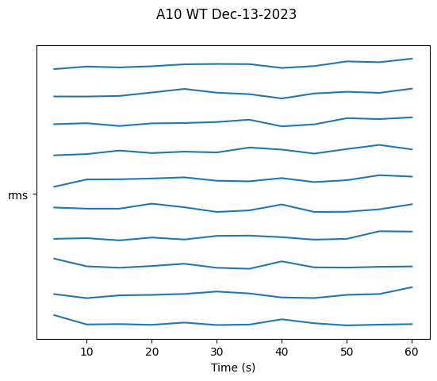
Band Power Visualization#
psdband holds one value per frequency band per channel, so plot_linear_temporal draws it
as a set of band traces. plot_psd_histogram is a different view of the spectrum: it plots
the full psd feature on log-log axes and fits a slope to each channel.
# Band powers over time
ap.plot_linear_temporal(features=['psdband'])
# Power spectrum with a fitted slope per channel
ap.plot_psd_histogram()
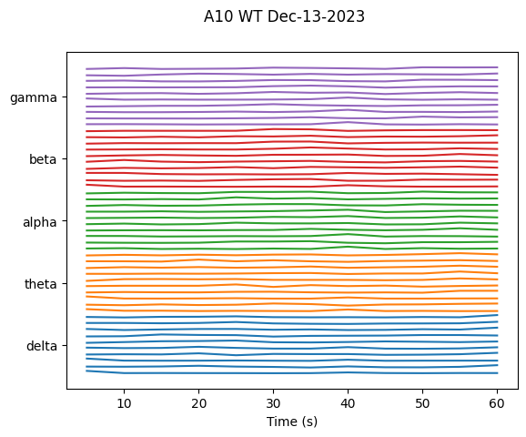
/home/runner/work/neurodent/neurodent/src/neurodent/plotting/animal.py:612: RuntimeWarning: divide by zero encountered in log10
freqs, 10 ** (b + m * np.log10(freqs)), c=f"C{j}", alpha=0.75
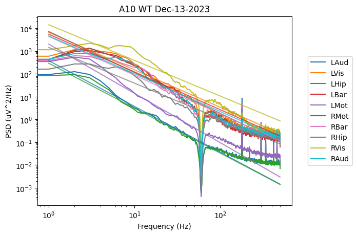
2. Multi-Animal Comparison (ExperimentPlotter)#
Setup#
# Build a second animal so there are two genotypes to compare
war_f22 = build_war("F22", datetime(2023, 12, 12, 2, 0))
wars = [war, war_f22]
# Create experiment plotter.
# Pass the same feature list used to compute the WARs -- `features` defaults to "all",
# which would then fail on every feature that was not computed.
EXCLUDE = ['nspike', 'lognspike']
ep = ExperimentPlotter(
wars,
features=FEATURES,
exclude=EXCLUDE,
)
Processing rows: 0%| | 0/12 [00:00<?, ?it/s]
Processing rows: 25%|██▌ | 3/12 [00:00<00:00, 21.32it/s]
Processing rows: 50%|█████ | 6/12 [00:00<00:00, 21.31it/s]
Processing rows: 75%|███████▌ | 9/12 [00:00<00:00, 21.50it/s]
Processing rows: 100%|██████████| 12/12 [00:00<00:00, 21.27it/s]
Processing rows: 100%|██████████| 12/12 [00:00<00:00, 21.28it/s]
Categorical Plots#
Compare features across groups using box plots, violin plots, swarm plots, etc.
# Box plot grouped by genotype
ep.plot_catplot(
'rms',
groupby='genotype',
kind='box',
catplot_params={'showfliers': False}
)
plt.suptitle("RMS by Genotype")
plt.show()
# Violin plot with day/night comparison
ep.plot_catplot(
'rms',
groupby=['genotype', 'isday'],
x='genotype',
col='isday',
kind='violin'
)
plt.suptitle("RMS by Genotype and Time of Day")
plt.show()
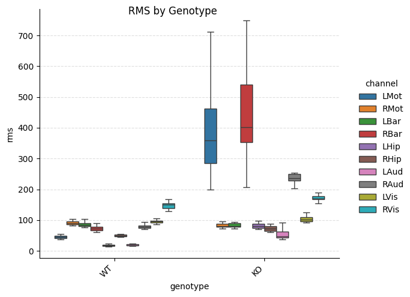
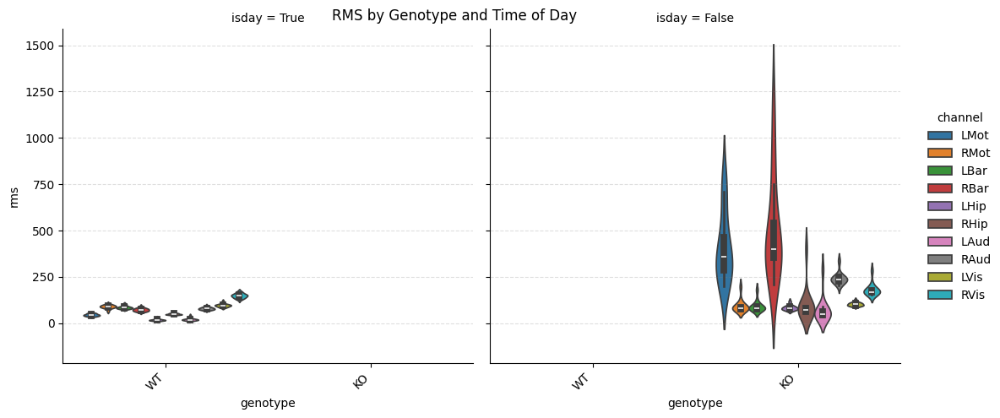
Band Power Comparisons#
# Box plot of band powers by genotype
ep.plot_catplot(
'psdband',
groupby='genotype',
x='genotype',
hue='band',
kind='box',
collapse_channels=True,
catplot_params={'showfliers': False}
)
plt.suptitle("Band Power by Genotype")
plt.show()
# With day/night split
ep.plot_catplot(
'psdband',
groupby=['genotype', 'isday'],
x='genotype',
col='isday',
hue='band',
kind='box',
collapse_channels=True,
catplot_params={'showfliers': False}
)
plt.suptitle("Band Power by Genotype and Time")
plt.show()
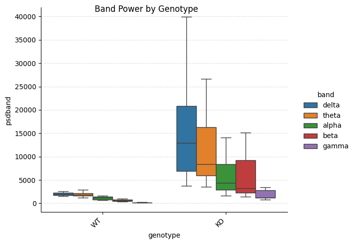
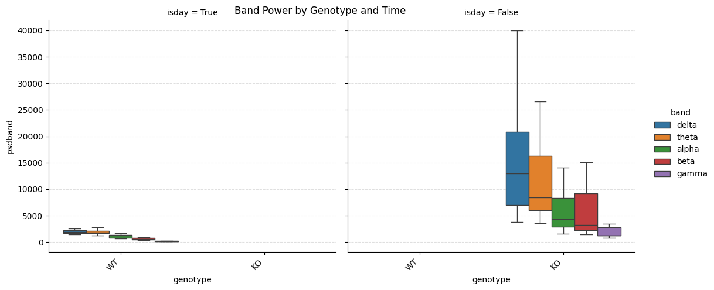
Swarm and Point Plots#
Show individual data points with averages:
# Swarm plot with animal-level averaging
ep.plot_catplot(
'rms',
groupby=['animal', 'genotype'],
x='genotype',
hue='channel',
kind='swarm',
average_groupby=True,
collapse_channels=False,
catplot_params={'dodge': True, 'errorbar': 'ci'}
)
plt.suptitle("RMS by Genotype (Animal Averages)")
plt.show()
# Point plot with confidence intervals
ep.plot_catplot(
'rms',
groupby=['animal', 'genotype'],
x='genotype',
kind='point',
average_groupby=True,
collapse_channels=True,
catplot_params={'errorbar': 'ci'}
)
plt.suptitle("RMS by Genotype (Mean ± CI)")
plt.show()
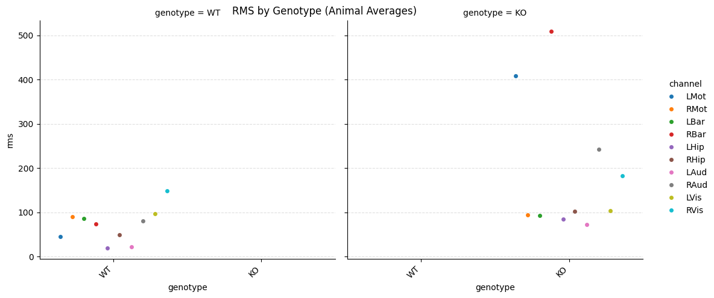
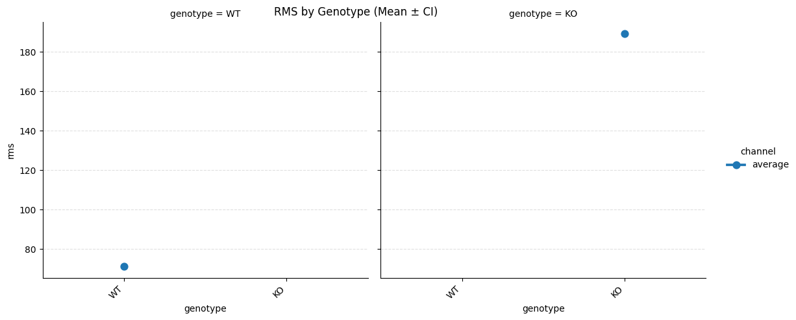
3. Connectivity Visualization#
Heatmaps for Coherence and Correlation#
# Coherence heatmap by genotype
ep.plot_heatmap(
'cohere',
groupby='genotype'
)
plt.suptitle("Coherence by Genotype")
plt.show()
# Pearson correlation heatmap
ep.plot_heatmap(
'pcorr',
groupby='genotype'
)
plt.suptitle("Correlation by Genotype")
plt.show()
# With day/night comparison
ep.plot_heatmap(
'cohere',
groupby=['genotype', 'isday']
)
plt.suptitle("Coherence by Genotype and Time")
plt.show()
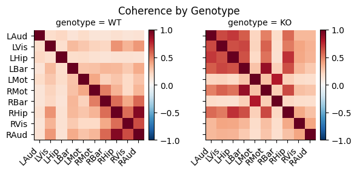
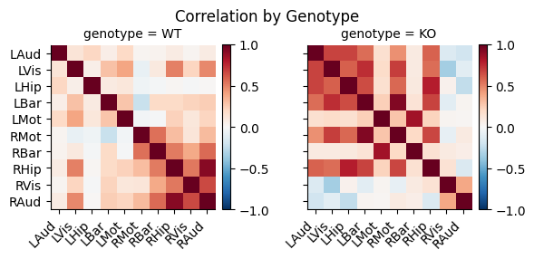
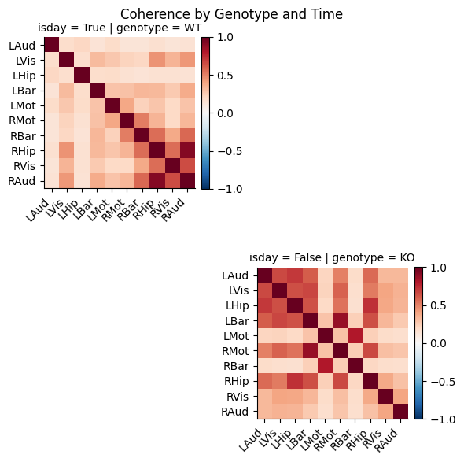
Difference Heatmaps#
Show differences relative to a baseline condition:
# Difference from wildtype, broken out by frequency band.
# `baseline_groupby` names the column holding the baseline label, and `remove_baseline`
# drops the baseline group itself from the output.
ep.plot_diffheatmap(
'cohere',
groupby='genotype',
baseline_key='WT',
baseline_groupby='genotype',
col='band',
remove_baseline=True
)
plt.suptitle("Band-Specific Coherence Differences from WT")
plt.show()
/home/runner/work/neurodent/neurodent/src/neurodent/plotting/experiment.py:1116: FutureWarning: The default of observed=False is deprecated and will be changed to True in a future version of pandas. Pass observed=False to retain current behavior or observed=True to adopt the future default and silence this warning.
df_base = df.groupby(baseline_groupby, as_index=False).get_group(
/home/runner/work/neurodent/neurodent/src/neurodent/plotting/experiment.py:1127: FutureWarning: The default of observed=False is deprecated and will be changed to True in a future version of pandas. Pass observed=False to retain current behavior or observed=True to adopt the future default and silence this warning.
baseline_means = df_base.groupby(remaining_groupby)[feature].apply(
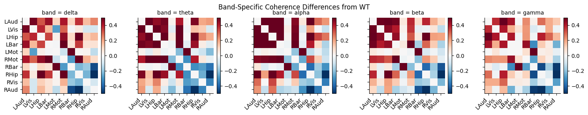
4. QQ Plots for Distribution Analysis#
# QQ plot by genotype and channel
ep.plot_qqplot(
'rms',
groupby=['genotype'],
row='genotype',
col='channel',
height=3
)
plt.suptitle("RMS Distribution QQ Plot")
plt.show()
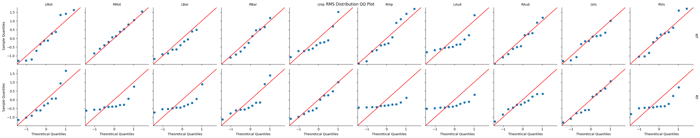
5. Customizing Plots#
Plot Parameters#
# Custom catplot parameters
custom_params = {
'showfliers': False,
'aspect': 2,
'height': 5,
'palette': 'Set2'
}
ep.plot_catplot(
'rms',
groupby='genotype',
kind='box',
catplot_params=custom_params
)
plt.show()
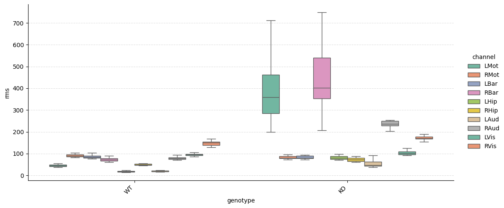
Channel Collapsing#
Average across channels:
# Without channel collapsing (show all channels)
ep.plot_catplot(
'rms',
groupby='genotype',
kind='box',
collapse_channels=False
)
plt.suptitle("RMS by Channel")
plt.show()
# With channel collapsing (average across channels)
ep.plot_catplot(
'rms',
groupby='genotype',
kind='box',
collapse_channels=True
)
plt.suptitle("RMS (Averaged Across Channels)")
plt.show()
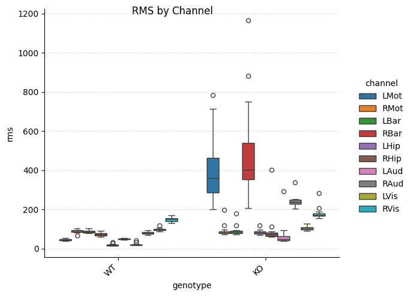
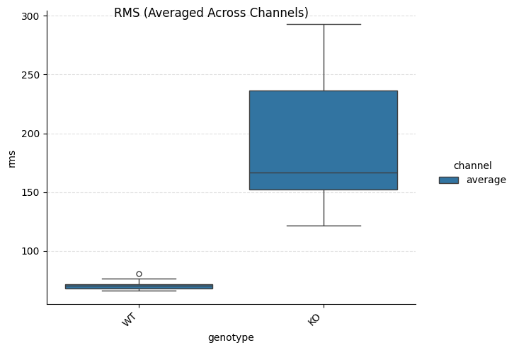
6. Saving Figures#
Save high-quality figures for publications:
# Use a temporary directory so this tutorial does not write into the docs source tree.
# In your own work this would be a real output folder.
output_folder = Path(tempfile.mkdtemp())
# Generate and save plot
g = ep.plot_catplot(
'rms',
groupby='genotype',
kind='box',
catplot_params={'showfliers': False}
)
# Save as PNG (high DPI for publications)
g.savefig(output_folder / 'rms_by_genotype.png', dpi=300, bbox_inches='tight')
# Save as PDF (vector format)
g.savefig(output_folder / 'rms_by_genotype.pdf', bbox_inches='tight')
print(f"Figures saved to {output_folder}")
Figures saved to /tmp/tmpg11evfi0
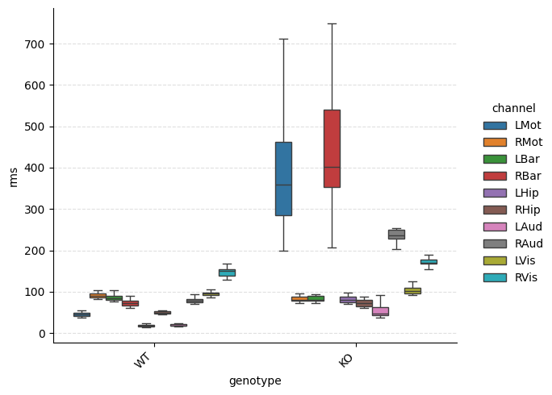
7. Batch Figure Generation#
Generate multiple figures systematically:
# Generate plots for all linear features that were computed.
# `ExperimentPlotter` does not keep the exclude list, so reuse the one declared above.
for feature in constants.LINEAR_FEATURES:
if feature in EXCLUDE or feature not in FEATURES:
continue
print(f"Generating plot for {feature}")
# Box plot
g = ep.plot_catplot(
feature,
groupby='genotype',
kind='box',
collapse_channels=True,
catplot_params={'showfliers': False}
)
g.savefig(
output_folder / f'{feature}_genotype_box.png',
dpi=300,
bbox_inches='tight'
)
plt.close()
print("Batch generation complete!")
Generating plot for rms
Batch generation complete!
8. Advanced: Custom Plot Types#
Access underlying data for custom visualizations:
# Get the long-form dataframe backing the plots.
# Columns are the groupby keys, plus 'channel' and one column named after the feature.
df = ep.pull_timeseries_dataframe('rms', groupby='genotype')
print(df.columns.tolist())
# Create custom plot with matplotlib
fig, ax = plt.subplots(figsize=(10, 6))
# Plot using pandas/seaborn directly
sns.boxplot(data=df, x='genotype', y='rms', ax=ax)
ax.set_title("Custom RMS Plot")
ax.set_ylabel("RMS Amplitude")
plt.show()
['genotype', 'channel', 'rms']
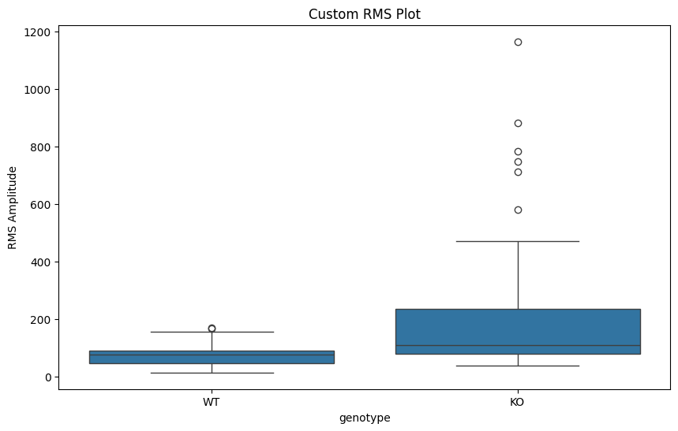
9. Circadian Rhythms (ZeitgeberPlotter)#
Visualize circadian patterns using ZeitgeberPlotter. This specialized plotter handles the
48-hour duplicated time axis often used in circadian research.
ZeitgeberPlotter needs one scalar per row, so feed it
ZeitgeberAnalysisResult.get_channel_averaged_result() rather than get_result(). The
latter keeps one array of per-channel values in each feature cell. Channel-averaging is also
what produces the baseline-subtracted *_nobase columns, since baseline subtraction only
applies to numeric columns.
The bundled excerpts are 60 seconds long, so every window falls in the same Zeitgeber bin. The curve below therefore demonstrates the plot’s shape and axis handling rather than a real circadian profile.
# Wrap a WAR in the Zeitgeber pipeline and average across channels
zar = ZeitgeberAnalysisResult(war)
df_zar = zar.get_channel_averaged_result(features=['rms'])
print("ZT columns:", [c for c in df_zar.columns if c.startswith('zt') or '_nobase' in c])
zp = ZeitgeberPlotter(df_zar)
# Plot a single feature against Zeitgeber time
zp.plot_feature(
'rms_nobase', # Baseline-subtracted feature
output_path=output_folder / 'circadian_rms.png',
figsize=(10, 6)
)
print(f"Circadian plot written to {output_folder / 'circadian_rms.png'}")
ZT columns: ['zt_minutes', 'duration_nobase', 'rms_nobase']
Circadian plot written to /tmp/tmpg11evfi0/circadian_rms.png
Next Steps#
Windowed Analysis Tutorial: Generate data for visualization
Basic Usage Tutorial: Complete workflow